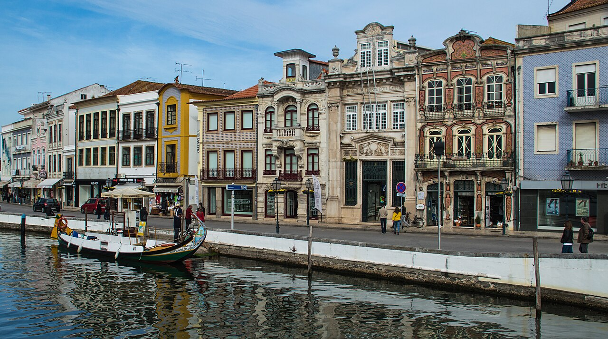

Turismo em Aveiro
Aveiro
Aveiro é uma cidade portuguesa e capital da sub-região da Região de Aveiro, pertencendo à região do Centro e ao Distrito de Aveiro e ainda à antiga província da Beira Litoral. A cidade possui 62.653 habitantes (2021) sendo sede do Município de Aveiro que tem uma área total de 197,58 km2, 88 154 habitantes em 2024 e, por isso, uma densidade populacional de 446 hab./km2, estando subdividido em 10 freguesias.O município é limitado a norte pelo município da Murtosa, a nordeste por Albergaria-a-Velha, a leste por Águeda, a sul por Oliveira do Bairro, a sudoeste por Vagos e por Ílhavo e a oeste com o Oceano Atlântico,A cidade é um importante centro urbano, portuário, ferroviário, universitário e turístico. Fica situada a cerca de 63 km a noroeste de Coimbra, de 70 km a sul do Porto, e a 255 km de Lisboa.
Ilha Dos Puxadoiros
